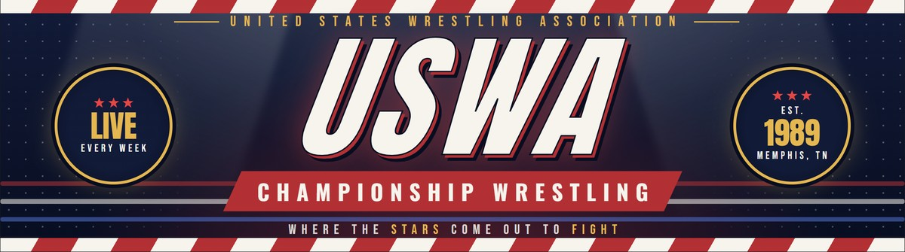

Rougeau came down to the ring running down the USWA and says that the Mid South is full of nothing but bottom feeding fans that don't deserve to see him wrestle. His comments towards the fans didn't go over well with Jeff Jarrett, who made his way down after the match and attacked Jacques to the fans delight.Click here to return to Memphis, TN 4.27.1991 The Three Way Dance.